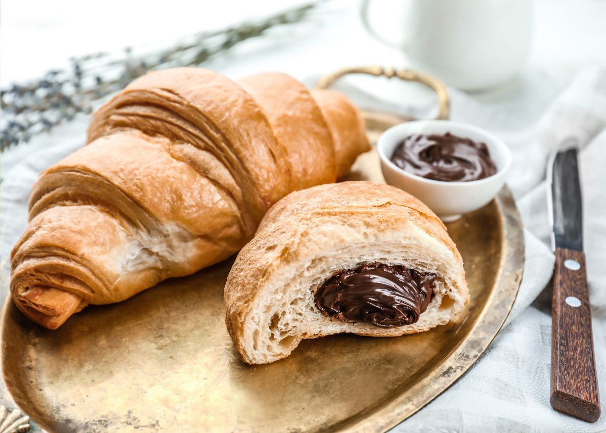

Receta para Croissants de Chocolate

Ingredientes
Para la masa:
- 250 g de harina de trigo
- 25 g de azúcar
- 5 g de sal
- 10 g de levadura fresca
- 125 ml de leche tibia
- 100 g de mantequilla (a temperatura ambiente)
- 1 huevo
- Opcional: 1/2 cdta de esencia de vainilla
Para el relleno:
- 200 g de chocolate para repostería (en trozos o chips)
Para barnizar:
Preparación
- En un bol grande, mezcla la harina, el azúcar y la sal.
- Disuelve la levadura en la leche tibia y añade a la mezcla de harina.
- Añade el huevo y mezcla hasta obtener una masa homogénea.
- Amasa la masa durante unos 10 minutos hasta que esté suave y elástica.
- Forma una bola con la masa, cúbrela con un paño y déjala reposar en un lugar cálido durante 1 hora o hasta que haya duplicado su tamaño.
- Enharina una superficie y estira la masa en un rectángulo grande.
- Extiende la mantequilla sobre la mitad de la masa y dobla la otra mitad sobre ella.
- Estira la masa nuevamente y dóblala en tercios. Repite este proceso dos veces más, dejando reposar la masa en la nevera durante 30 minutos entre cada pliegue.
- Divide la masa en triángulos y coloca algunos trozos de chocolate en la base de cada triángulo.
- Enrolla los triángulos desde la base hacia la punta para formar los croissants.
- Coloca los croissants en una bandeja de horno, cúbrelos con un paño y déjalos reposar durante 30 minutos.
- Precalienta el horno a 180°C (350°F).
- Barniza los croissants con el huevo batido y hornéalos durante 15-20 minutos o hasta que estén dorados y crujientes.
- Deja enfriar antes de servir.
Presiona aquí para acceder al video de la receta
Volver al inicio